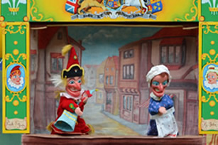

Eco fest
Eco fest
Acts
There are four main acts that are performing at eco fest
Green Gizmo
Green Gizmo is a six pice act that use puppets and sing songs for young children they will be performing at 11:00 and will finsh at 1:00 there will be a short break at 12:00 for all the kids to gets a drink and food and run around. the puppet show will not take place on the main stage it will take place near the childrens play area.
Solar drum
Solar drum is a local pop band the are going to be performing at 2:00 and will be finshing at 4:30 on the main stage
Everyone's enviroment
Everyone's enviroment is a local four pice indie band they will be takeing place at 5:00 and they will be finshed at 8:00 on the main stage

DJ John Alfred
DJ John Alfred will be performing at 8:30 and will be finshing at 11.45 he is best know for is song were coming home

`